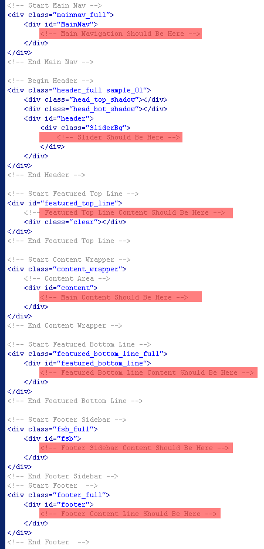
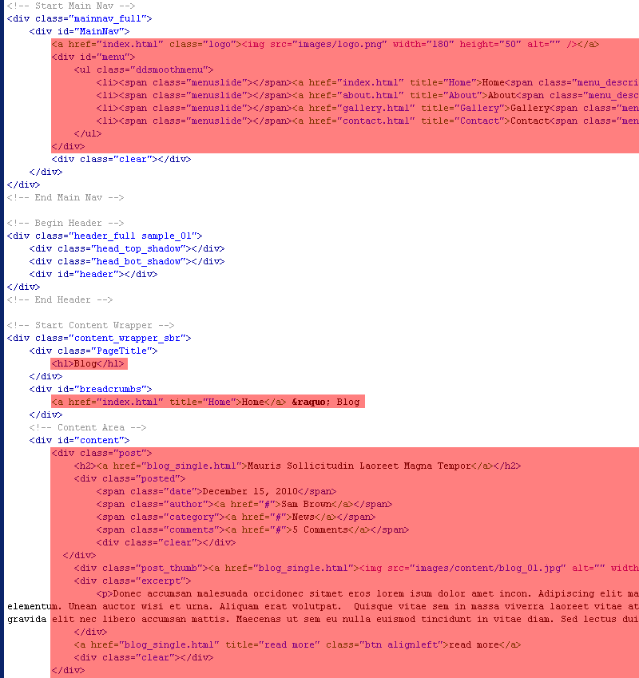
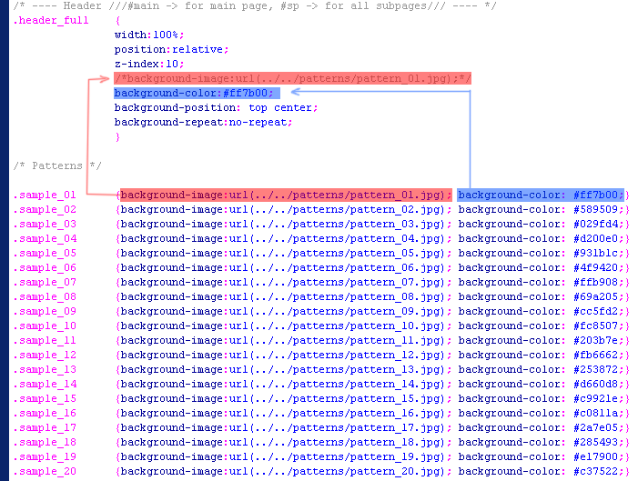
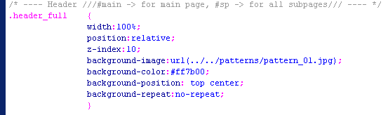
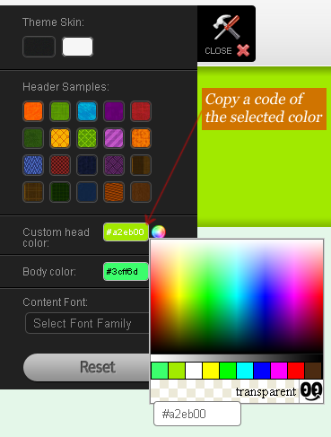
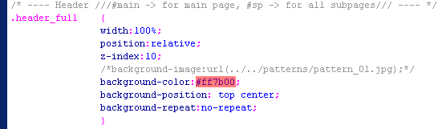
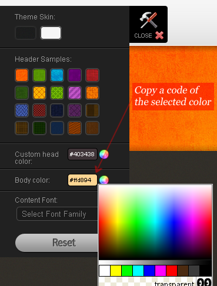
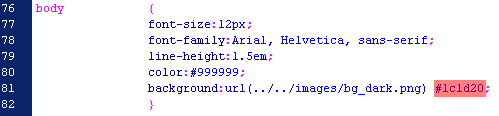
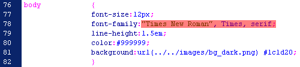

Inspiration
Premium xHTML/CSS Template
- Created: 09/09/2011
- latest Update: 09/13/2011
- By: MixerTheme
- Email: mixertheme@gmail.com
Thank you for purchasing my theme. If you have any questions that are beyond the scope of this help file, please feel free to email via my user page contact form here. Thanks so much!
HTML Structure
This theme is a fixed layout with up to four columns on main page and on all subpages.
All of the header elements, logo and main navigation is nested within a div with an id of "MainNav". Each theme's sliders is nested within a div with an id of "header". Featured Line which is shown right under the slider on main page is nested within a div with an id of "featured_top_line". All of the information within the main content for page area is nested within a div with an id of "content" (see more detailed in a next paragraph). Featured bottom content which is right below content and under footer sidebar is nested within a div with an id of "featured_bottom_line". Footer sidebar is nested within a div with an id of "fsb". Footer copyright info can be adited under the div with an id of "footer". See the screenshot below for detailed info, all the content of divs mentioned above are marked with red color:

All of the information within the main content for page area is nested within a div with a class of "content_wrapper". Use class named with "content_wrapper" if you want to use a full width page, "content_wrapper_sbr" - for left content with sidebar column at right and "content_wrapper_sbl" - for right content with sidebar column at left.See the screenshot below for better understanding.
The sidebar for all the subpages content is within a div with a id of "sidebar". The main content for the subpages is within a id of "content". Here is the sample of general structure for all pages:

Here is the sample of general structure for all pages.

If you would like to edit the color, font, or style of any elements in one of these columns, you would do the following:
#content a {color: #someColor;}
If you find that your new style is not overriding, it is most likely because of a specificity problem. Scroll down in your CSS file and make sure that there isn't a similar style that has more weight.
I.E.
.content_wrapper #content a {color: #someColor;}
So, to ensure that your new styles are applied, make sure that they carry enough "weight" and that there isn't a style lower in the CSS file that is being applied after yours.
CSS Files and Structure
I'm using six CSS files in this theme. By using of them, we can work round this. Those files also contains some general styling, such as anchor tag colors, font-sizes, etc. Keep in mind, that these values might be overridden somewhere else in the files below:
- styles.css - main css file (included reset styles);
- widgets.css - contains the styles for all widgets in this theme;
- shortcodes.css - contains the styles for shortcodes of the theme;
- ddsmoothmenu.css - conatins all the styles for main menu;
- contact.css - contains styles for featured content like shortcodes;
- Prettyphoto.css - contain the styles for lightbox script.
Note: Since we have two main colour themes (dark and light) some of the stylesheet files differs from other which is for other theme variation(styles.css, widgets.css, shortcodes.css), then you should edit necessary color theme file. I.E. if you want to use dark theme variation, you need to edit the files of dark theme: stylesheets/dark/styles.css
styles.css file contains all of the specific stylings for the page. The file is separated into sections using:
/* ############################################################## --- CONTENTS --- ############################################################## 1. RESET/GLOBAL Default Form Elements 2. GENERAL STRUCTURE Main Nav Area logo menu Header Featured Top Line Featured Bottom Line Content / Layout FOOTER 3. PAGES STYLES&LAYOUTS Fullwidth Page Layouts Gallery Page Portfolio Page Portfolio Detailed Page Blog Page bio popular & related commentlist comment form Contact Page 404 Error Page 4. SIDEBARS Content Sidebar Footer Sidebar 5. STYLED ELEMENTS Breadcrumbs Pagination Styles for Buttons Ordered/Unordered Lists Table Layout */
If you would like to edit a specific section of the site, simply find the appropriate label in the CSS file, and then scroll down until you find the appropriate style that needs to be edited.
Any images that are placed within the blog section have 5px worth of padding and a light bluish background. If you would like to edit the display of these images, find the following section in the style sheet:
#primaryContent #blog img {
change styles here:
}
widgets.css file contains all of the specific stylings for all the available page's widgets. The file is separated into sections using:
/* ############################################################## --- WIDGETS --- ############################################################## 1. CONTENT SIDEBAR Default Widgets Container Archive Categories Nav Menu Links Pages Search Recent Posts Custom Widgets Tabbed Recent Projects Recent Posts + Flickr 2. FOOTER SIDEBAR Default Widgets Custom Widgets */
shortcodes.css file contains all of the specific stylings for all the available page's shortcodes which the theme uses. The file is separated into sections using:
/* ############################################################## --- SHORTCODES --- ############################################################## 1. GLOBAL Default Widgets Custom Widgets 2. IMAGES Default Widgets */
ddsmoothmenu.css file contains all of the specific stylings for main and secondary navigation of the template. The file has a comments to most of necessary classes like in a sample below:
#menu ul.ddsmoothmenu{
margin:0;
padding:0;
list-style:none;
float:left;
position:relative;
z-index:10000;
}
/*Top level list items*/
#menu ul.ddsmoothmenu li{
position: relative;
display: inline;
float: left;
}
contact.css file contains all of the specific stylings for the shortcodes which are mentioned on a script for contact page. See the code below:
/* Form style */
#contact label {display: block;}
#contact input[type="submit"][disabled] { background:#888; cursor: default; }
#contact span.required{ color: #ff0000; } /* Select the colour of the * if the field is required. */
#message { margin: 10px 0; padding: 0; }
#message fieldset { padding:20px; border:1px solid #eee; border-radius:5px; -moz-border-radius:5px; -webkit-border-radius:5px; background:#F9FAF5; }
.error_message { display: block; line-height: 22px; background: #FBE3E4 url('../assets/error.gif') no-repeat 10px 6px; padding: 3px 10px 3px 35px; color:#8a1f11;border: 1px solid #FBC2C4; -moz-border-radius:5px; -webkit-border-radius:5px; }
ul.error_messages { margin: 0 0 0 15px; padding: 0; }
ul.error_messages li { height: 22px; line-height: 22px; color:#333; }
.loader { padding: 0 10px; }
#contact #success_page h1 { background: url('../assets/success.gif') left no-repeat; padding-left:22px; }
acronym { border-bottom:1px dotted #ccc; }
prettyPhoto.css file contains only the styles for lightbox's script styles. Here you can make changes if you would like to create your own style for lightbox:
/* ----------------------------------
Dark Rounded Theme
----------------------------------- */
div.dark_rounded .pp_top .pp_left { background: url(../images/prettyPhoto/dark_rounded/sprite.png) -88px -53px no-repeat; } /* Top left corner */
div.dark_rounded .pp_top .pp_middle { background: url(../images/prettyPhoto/dark_rounded/contentPattern.png) top left repeat; } /* Top pattern/color */
div.dark_rounded .pp_top .pp_right { background: url(../images/prettyPhoto/dark_rounded/sprite.png) -110px -53px no-repeat; } /* Top right corner */
div.dark_rounded .pp_arrow_previous.disabled { background-position: 0 -87px; cursor: default; }
div.dark_rounded .pp_arrow_next { background: url(../images/prettyPhoto/dark_rounded/sprite.png) -22px -71px no-repeat; } /* The next arrow in the bottom nav */
div.dark_rounded .pp_arrow_next.disabled { background-position: -22px -87px; cursor: default; }
div.dark_rounded .pp_bottom .pp_left { background: url(../images/prettyPhoto/dark_rounded/sprite.png) -88px -80px no-repeat; } /* Bottom left corner */
div.dark_rounded .pp_bottom .pp_middle { background: url(../images/prettyPhoto/dark_rounded/contentPattern.png) top left repeat; } /* Bottom pattern/color */
div.dark_rounded .pp_bottom .pp_right { background: url(../images/prettyPhoto/dark_rounded/sprite.png) -110px -80px no-repeat; } /* Bottom right corner */
div.dark_rounded .pp_loaderIcon { background: url(../images/prettyPhoto/dark_rounded/loader.gif) center center no-repeat; } /* Loader icon */
The Important Notice: This theme is going with a 20 custom patterns, unlimited header colors and unlimited background colours. Please see the detailed explanation on how to select your own pattern and your necessary background color properly with a help of demo page's "Options Panel"
Just a few steps bellow will help you to build your pattern properly to your Template:
- Open a main css file of this theme (for example we choose dark theme variation): Main File\Inspiration_xhtml_template\dark\stylesheets\dark\styles.css
- Scroll down to the line 365 of the styles.css file, right under it you'll find a code like the one below:
-
/* Patterns */ .sample_01 {background-image:url(../../patterns/pattern_01.jpg); background-color: #ff7b00;} .sample_02 {background-image:url(../../patterns/pattern_02.jpg); background-color: #589509;} .sample_03 {background-image:url(../../patterns/pattern_03.jpg); background-color: #029fd4;} .sample_04 {background-image:url(../../patterns/pattern_04.jpg); background-color: #d200e0;} .sample_05 {background-image:url(../../patterns/pattern_05.jpg); background-color: #931b1c;} .sample_06 {background-image:url(../../patterns/pattern_06.jpg); background-color: #4f9420;} .sample_07 {background-image:url(../../patterns/pattern_07.jpg); background-color: #ffb908;} .sample_08 {background-image:url(../../patterns/pattern_08.jpg); background-color: #69a205;} .sample_09 {background-image:url(../../patterns/pattern_09.jpg); background-color: #cc5fd2;} .sample_10 {background-image:url(../../patterns/pattern_10.jpg); background-color: #fc8507;} .sample_11 {background-image:url(../../patterns/pattern_11.jpg); background-color: #203b7e;} .sample_12 {background-image:url(../../patterns/pattern_12.jpg); background-color: #fb6662;} .sample_13 {background-image:url(../../patterns/pattern_13.jpg); background-color: #253872;} .sample_14 {background-image:url(../../patterns/pattern_14.jpg); background-color: #d660d8;} .sample_15 {background-image:url(../../patterns/pattern_15.jpg); background-color: #c9921e;} .sample_16 {background-image:url(../../patterns/pattern_16.jpg); background-color: #c0811a;} .sample_17 {background-image:url(../../patterns/pattern_17.jpg); background-color: #2a7e05;} .sample_18 {background-image:url(../../patterns/pattern_18.jpg); background-color: #285493;} .sample_19 {background-image:url(../../patterns/pattern_19.jpg); background-color: #e17900;} .sample_20 {background-image:url(../../patterns/pattern_20.jpg); background-color: #c37522;} - Open a demo page like this http://csscollector.com/xhtml/inspiration/dark/about.html and slide up an "Options Panel"
- Choose a pattern you liked and remember it's order number then return to a style.css and find its style in the list above, there are on lines 378 to 397 of styles.css file.
- Then you should copy and paste the line with your already choosen background image (pattern) into the class called ".header_full".
- See the explanation on a screenshot below:
- 
- So, we are done, the result should look like the one below:
- 
If you would like to use only color for your header instead the preinstalled patterns samples, then please follow instructions bellow:
- Open a demo page like this http://csscollector.com/xhtml/inspiration/dark/about.html and slide up an "Options Panel". Then pick your color with help of color picker on a panel (see a screen below).
- 
- Then replace a color code on a line 371 of styles.css file like it shows below:
- 
Now we're ready to set up our background color for our already set up pattern. Just a few other steps bellow will hep:
- Open a demo page like this http://csscollector.com/xhtml/inspiration/dark/about.html and slide up an "Options Panel". Then pick your color with help of color picker on a panel (see a screen below).
- 
- Then replace a color code on a line 81 of styles.css file like it shows below:
- 
Now we're about how to get necessary fonts for page elements:
- Open a demo page like this http://csscollector.com/xhtml/inspiration/dark/about.html and slide up an "Options Panel" and select your liked font. Remember it's name.
- Then open a Main File\Inspiration_xhtml_template\dark\stylesheets\dark\styles.css file and type there a font name for example "Times New Roman" for page elements. For example if you want to use this font for all the content, just add it's name before the others font names.
- Before changing:
-

- After changing:
- 
Thats All. Enjoy the Theme.
JavaScript
This theme imports 18 Javascript files. You can see some help info, when click links which are below each regarding script:
- jQuery - is a Javascript library that greatly reduces the amount of code that you must write. For more information, please visit http://www.jquery.com/
- DD Smooth Menu. Refer to the author's documentation for additional notes on how to use it.
- Hover Fading Effect. Refer to the author's documentation for additional notes on how to use it.
- jQuery lightbox for images, videos, YouTube, iframes. Refer to the author's documentation for additional notes on how to use it.
- Cufon font replacement plugin. Refer to the author's documentation for additional notes on how to use it.
- Nivo Slider. Refer to the author's documentation for additional notes on how to use it.
- Coin Slider Refer to the author's documentation for additional notes on how to use it.
- Accordion Slider Refer to the author's documentation for additional notes on how to use it.
- Anything Slider Refer to the author's documentation for additional notes on how to use it.
- Orbit Slider Refer to the author's documentation for additional notes on how to use it.
- Roundabout Slider Refer to the author's documentation for additional notes on how to use it.
- Serie 3 Slider Refer to the author's documentation for additional notes on how to use it.
- jQuery Carousel. Refer to the author's documentation for additional notes on how to use it.
- jQuery Tabs. Refer to the author's documentation for additional notes on how to use it.
- jQuery Watermarkinput. Refer to the author's documentation for additional notes on how to use it.
- flexibleColumns Refer to the author's documentation for additional notes on how to use it.
- Tipsy Refer to the author's documentation for additional notes on how to use it.
- Uniform Refer to the author's documentation for additional notes on how to use it.
PSD Files
I've included one psd with this theme:
- 01_home.psd
If you'd like to change the elements for pages, just open necessary psd file in Photoshop, make the adjustments, and then save slices in their format (i.e. .gif, .jpg, .png) into folder with images of this theme.(only chose 'File'->'Save For Web' option in Photoshop) Do the same for all .psd files if needed.
Sources and Credits
I've used the following images, icons or other files as listed.
- Some illustration purchased from BigStockPhoto
- Some Photos were tooken from my own photo camera.
- Ajax Contact Form was purchased from here (see the help txt file in the same directory called contact_form on how to setup it properly)
Once again, thank you so much for purchasing this theme. As I said at the beginning, I'd be glad to help you if you have any questions relating to this theme. No guarantees, but I'll do my best to assist. If you have a more general question relating to the themes on ThemeForest, you might consider visiting the forums and asking your question in the "Item Discussion" section.
Alex Mixer